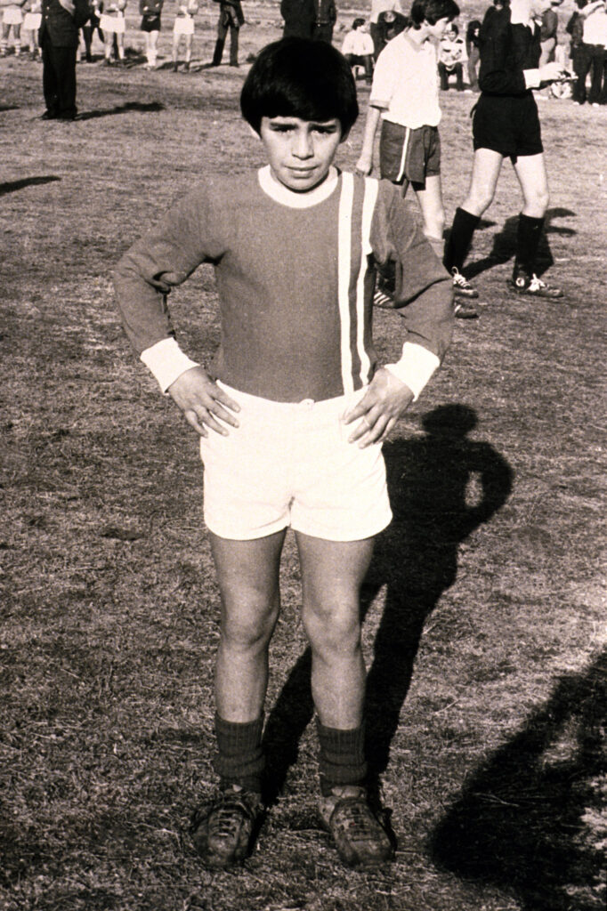

Diego Armando Maradona
Introduction

Source: FC Barcelona.
Diego Armando Maradona, an iconic figure in soccer. Born in Argentina, was celebrated for his exceptional
dribbling skills and his infamous "Hand of God"
goal that led Argentina to World Cup victory against England in 1986. His turbulent personal life and battles with addiction made headlines, but his undeniable
impact and inspiration for generations endure. (Brischetto, 2022).
First Years
Diego Armando Maradona, born in 1960 in Lanús, Buenos Aires, Argentina, displayed exceptional talent from a young age, rising swiftly through local club ranks due to his unique
skills and creativity. Despite growing up in a modest neighborhood, his early passion for football was evident. He embarked on his professional career with Boca Juniors, where
his remarkable performances, dribbling, and scoring prowess captured widespread acclaim.

Source: Agenda Sur.
Maradona's pathway to glory
Chronologycal highlights
- 1981:Maradona began his professional career with Boca Juniors in Argentina. His outstanding performances, dribbling skills, and goal-scoring ability quickly garnered attention.
- 1982:Despite not winning the tournament, Maradona's displays for the Argentine national team in the 1982 FIFA World Cup elevated his status as a rising star in the sport.
- 1982:Maradona's move to Barcelona marked a significant milestone, making him the world's most expensive player at the time. He became a key figure in European football.
- 1986:In the 1986 FIFA World Cup, held in Mexico, Diego Maradona delivered one of the most iconic performances in the history of the tournament, the "Hand of god."
In the 51st minute of the match, Maradona used his left hand to punch the ball into the net, disguising it as a header. The referee did not see the handball, and the goal was allowed to stand, putting Argentina ahead.
- 1986-1990:Maradona's time at Napoli saw the club secure Serie A titles in 1987 and 1990, marking a historic achievement. He also received the FIFA World Player of the Year award in 1986 and 1990.

Source: Top Ecommerce.
Comparisons with Messi
| Diego Maradona |
STATISTICS |
Lionel Messi |
| 12 |
TROPHIES |
42 |
| 1 |
WORLD CUPS |
1 |
| 0 |
AMERIA CUPS |
1 |
| 3 |
LEAGUES |
11 |
| 0 |
CHAMPIONS LEAGUE |
4 |
| 0 |
GOLDEN BALL |
7 |
| 724 |
MATCHES |
1040 |
| 358 |
GOALS IN TOTAL |
819 |
Source: Diario San Rafael.
(Fernández, 2023).
REFERENCES
- Brischetto, P. (2022, December 18). Diego Maradona Hand of god goal: The story of a legendary World Cup moment. Sporting News Canada. https://www.sportingnews.com/ca/soccer/news/diego-maradona-hand-of-god-world-cup-goal/huusvucwpklstnakghgulbvw
- Martinez, M. L. (2022, December 23). ¿Diego maradona o Lionel Messi?: El debate Futbolero por los dos ídolos de nuestra historia. Diario San Rafael. https://diariosanrafael.com.ar/diego-maradona-o-lionel-messi-el-debate-futbolero-por-los-dos-idolos-de-nuestra-historia/
- Fernández, T., & Tamaro, E. (2004). Diego Armando Maradona. Biografias y Vidas. https://www.biografiasyvidas.com/biografia/m/maradona.html
- Viudes, A. B. (2020, October 30). Maradona, UN Hijo del Pueblo. Agenda Sur. https://agendasur.com.ar/2020/10/30/maradona-un-hijo-del-pueblo/
CONTACT US